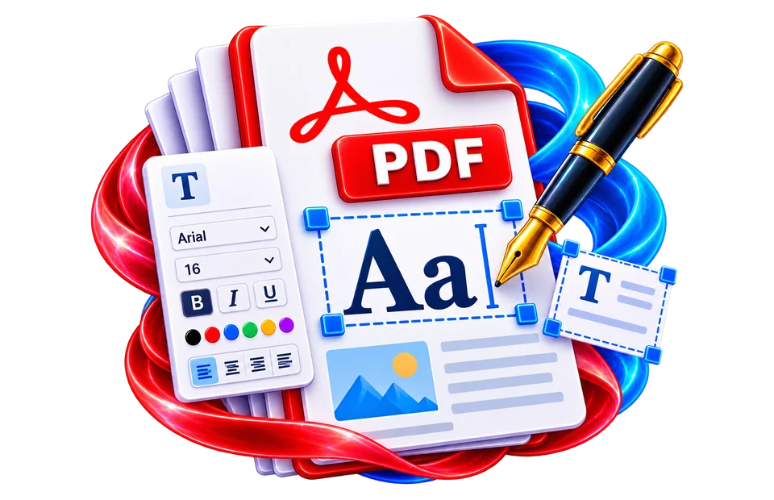

Open the PDF that needs an annotation
Place a note on a sample PDF, download it and check that existing selectable text remains intact.
Place custom text on PDF pages.
Adding a text overlay is different from modifying an existing text object's underlying bytes.

Place a note on a sample PDF, download it and check that existing selectable text remains intact.
Add a label or note to a PDF page.
Adding text does not necessarily modify existing underlying text.
Place a note on a sample PDF, download it and check that existing selectable text remains intact.
A visible 'Reviewed 15 Oct' note can be placed in unused margin space without altering the PDF's original text layer. Do not use a covering label as secure redaction.
Use the real tool above to verify the result. The example illustrates the workflow, not a guaranteed outcome.
A visible 'Reviewed 15 Oct' note can be placed in unused margin space without altering the PDF's original text layer. Do not use a covering label as secure redaction.
Overlay text may overlap content or appear differently in some viewers. Reopen the exported PDF and inspect the affected page.

Adding a text overlay is different from modifying an existing text object's underlying bytes.
Adding a text overlay is different from modifying an existing text object's underlying bytes.
Place a note on a sample PDF, download it and check that existing selectable text remains intact.
A visible 'Reviewed 15 Oct' note can be placed in unused margin space without altering the PDF's original text layer. Do not use a covering label as secure redaction.
A PDF text insertion tool generally places a new text object or visual annotation onto a selected page. This is useful for a label, date, reference number or short note. It does not automatically locate and replace a sentence that was already printed or scanned into the original document. If a mistake exists in the source content, adding new writing over it can leave the old text underneath. For a genuine correction, check whether the application supports original text editing or reconstruct the affected document from its source.
For example, adding "Reviewed 16 Oct 2026" near the lower-right corner of a report can be appropriate as a visible review mark. Choose text size, font and placement so it does not cover signatures or existing page numbers. A 12-point font has a defined physical size in PDF coordinates, but its appearance can vary by font metrics and zoom level. Preview at ordinary reading scale and on the actual page size before applying the change to every page.
PDF pages have coordinate systems that can differ from the top-left origin familiar in browser layouts. A new text label may be positioned unexpectedly if page rotation, crop boxes or scaling are involved. If the interface supports drag-and-drop placement, use the rendered preview rather than manually guessing coordinates. Non-English text requires fonts that contain the necessary glyphs; an unsupported Hindi character may appear as a blank square or be omitted. Verify multilingual output in the downloaded PDF, not just the entry field.
Adding text to a scanned PDF may appear as a layer over an image. The new label could be selectable while the underlying receipt text remains just pixels. Do not infer that the entire PDF became searchable because the inserted label can be searched. If you need reliable searchable archival records, run a separate OCR workflow and compare recognized text with the source. Re-exporting a PDF as raster pages can reduce font fidelity and accessibility.
Reopen the PDF and inspect page count, the exact target page and the intended content. Confirm that the label does not cross a page edge or overlap existing details, and search for the inserted phrase when a text-layer output is expected. If a form or signature is legally significant, avoid covering it with an annotation without proper authority. A visible label is not a cryptographic digital signature and does not prove who approved the document. Keep an untouched original for auditability.
Adding a note, label or missing reference number usually places a new element on top of an existing page. It does not necessarily edit the original paragraph underneath or cause subsequent text to reflow. For example, writing “Reviewed 16 Oct” beside a signature block can be suitable, but typing over an incorrect contract amount does not safely erase the old amount: extraction tools may still reveal it. If the note must be visible when printed, test text size and contrast on the final exported page. For confidential corrections, use a genuine redaction or document-source editing workflow instead of covering text with a colored rectangle.
Adding “Reviewed on 16 October” to a document can be useful for an internal copy, but placing text over an existing paragraph does not necessarily remove or replace the underlying content. If the original wording is confidential, merely covering it with a white rectangle is not secure redaction. Check coordinates, font size and alignment after exporting, especially when the source pages use different sizes or rotations. A visually neat overlay can still overlap selectable content or obscure a signature field. Keep the original document and confirm that any added note is clearly distinguishable from the underlying author's text.
Not necessarily; an annotation or overlay can sit on top without editing the original text.
Not reliably. Adding visible text is not the same as editing the underlying original text object and can leave the old content intact.
No. An overlay is usually additional drawing content; secure removal is a separate operation.
Page rotation, crop boxes and coordinate origins affect where drawing instructions land.